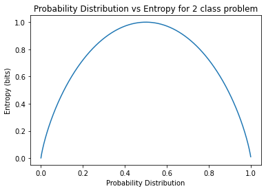

Code
from matplotlib import pyplot
import matplotlib.pyplot as plt
import numpy as np
# calculate entropy
def entropy(events, ets=1e-15):
return -sum([p * np.log2(p + ets) for p in events])
# define probabilities
probs = np.arange(0.0001,1,0.001)
# create probability distribution
dists = [[p, 1.0 - p] for p in probs]
# calculate entropy for each distribution
ents = [entropy(d) for d in dists]
# plot probability distribution vs entropy
plt.plot(probs, ents)
plt.title('Probability Distribution vs Entropy for 2 class problem')
plt.xlabel('Probability Distribution')
plt.ylabel('Entropy (bits)')
plt.show()